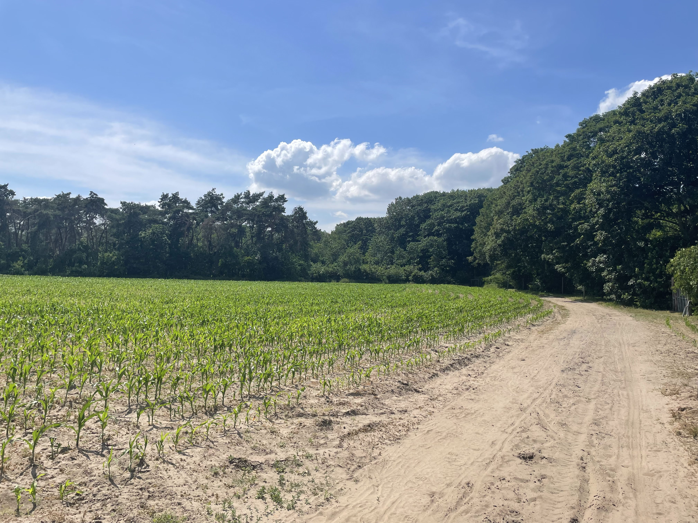

Mountainbiken
We raden je aan een mountainbikeroute in te studeren en erop uit te trekken met je mountainbike!
De Gratiebossen zijn gelegen in Berlare, Oost-Vlaanderen. Ze grenzen aan de Nieuwdonk van Overmere en aan de straat Kamershoek in Berlare. Het is niet alleen een hotspot voor lopers en wandelaars, maar ook voor natuurliefhebbers en vogelkenners.
U kan hier dus niet alleen genieten van een mooie wandelroute, maar ook van de dieren. Op rustige momenten spot je vaak een ree, een haas of een konijn. Maar ook de vogelliefhebbers hebben een grote waaier aan vogelsoorten voor het grijpen!
"De Ardennen van Berlare!"
We raden je aan een mountainbikeroute in te studeren en erop uit te trekken met je mountainbike!
Maak een mooie route onder de bomen, beschermd van de zon in de zomer!
Ga eens gaan wandelen met de familie of neem een blok- of werkpauze. De zuurstof in de Berlaarse bomen geven je terug moed en energie!
Heb je geen chique mountainbike dan kan je nog altijd voor een korte route doorheen het bos en richting de donk van Overmere!
Klik op de knop !
1/42
